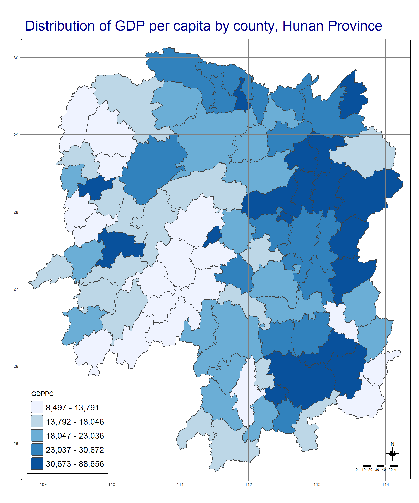
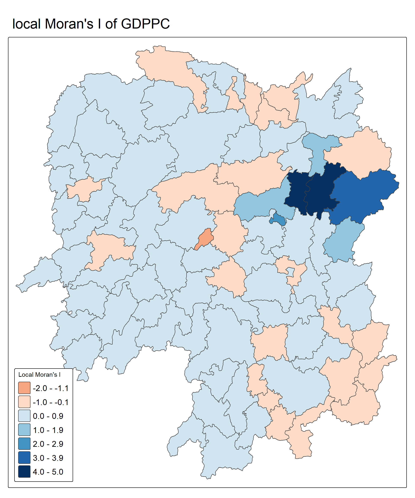
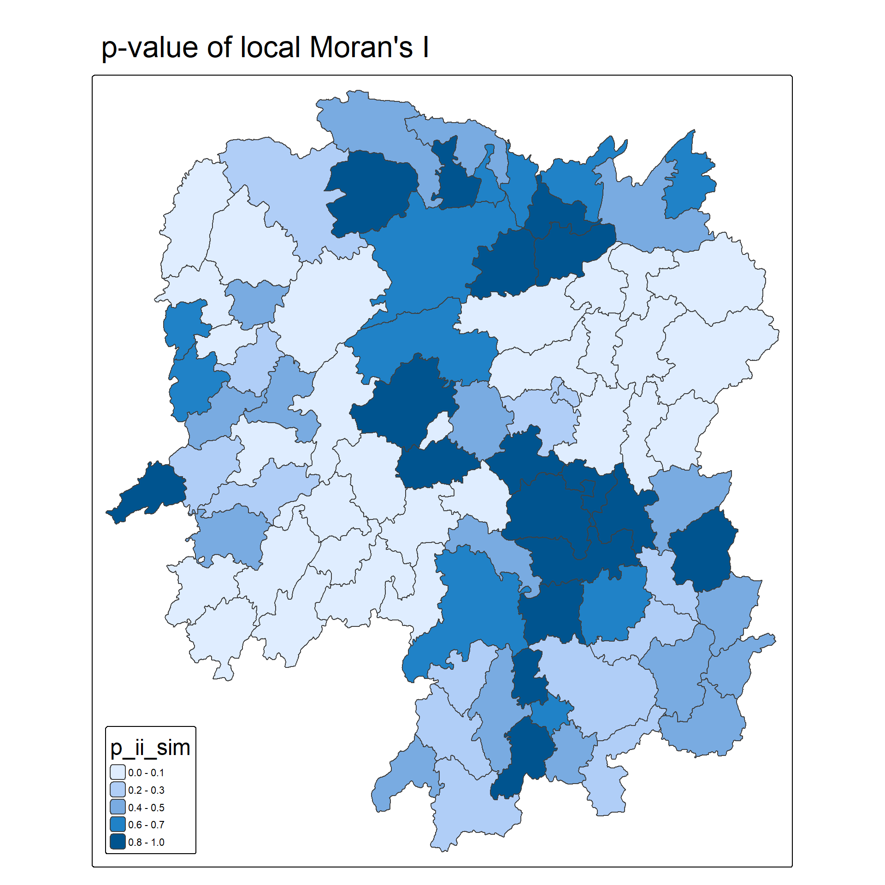
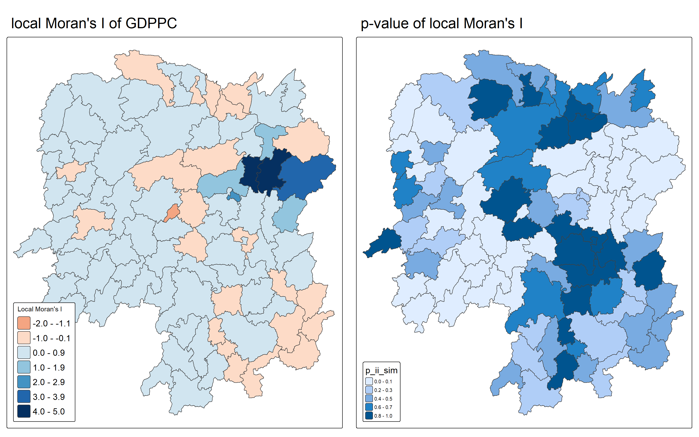
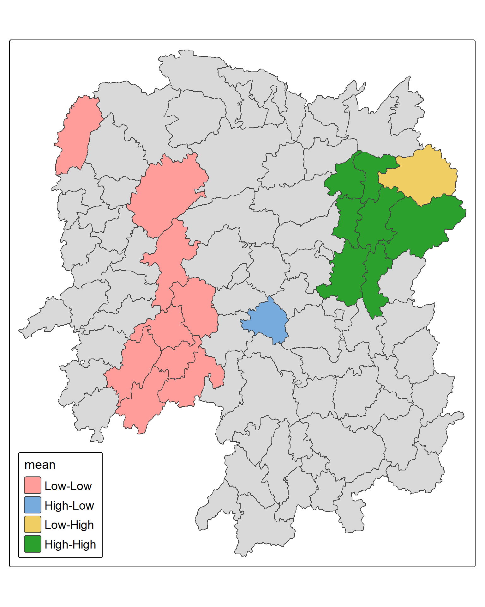
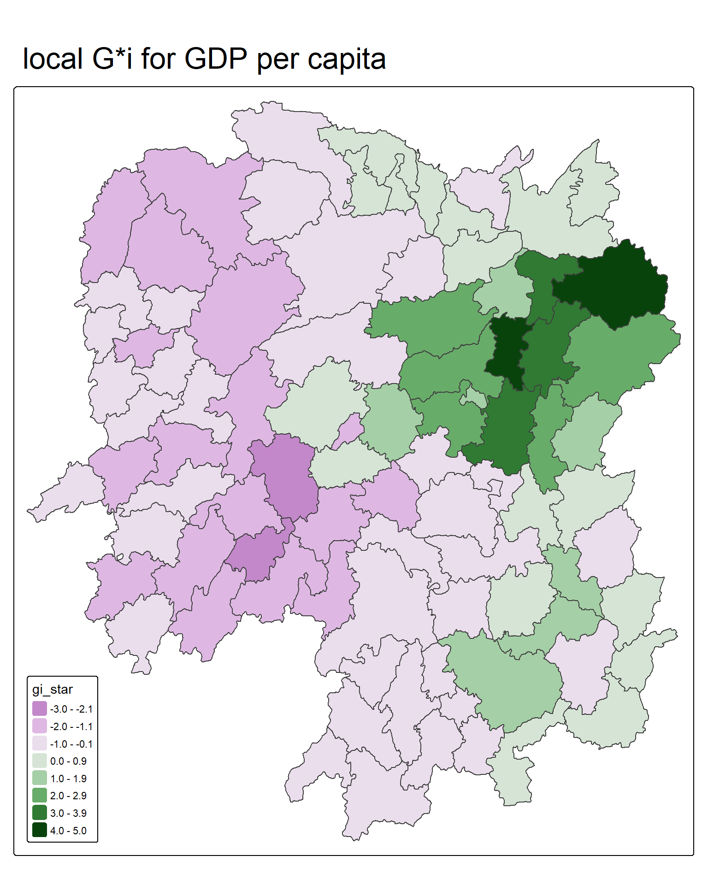
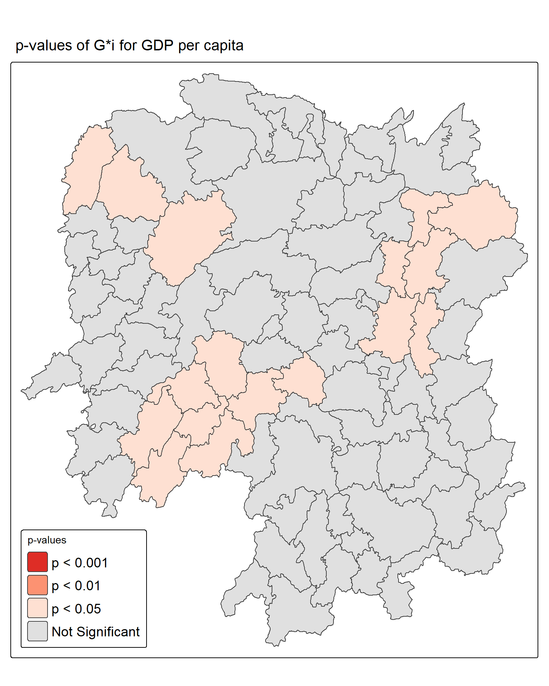
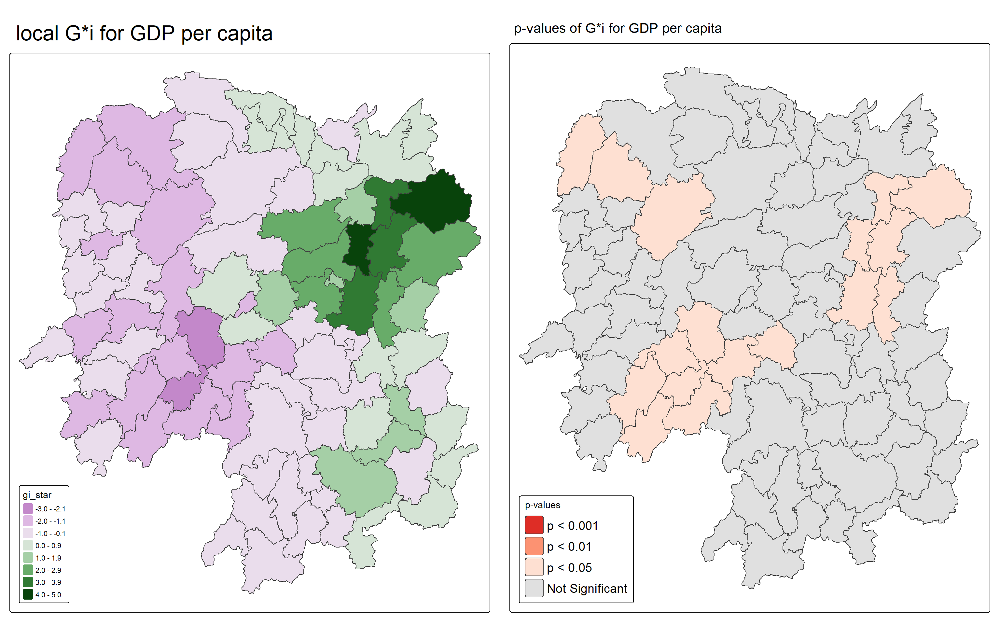
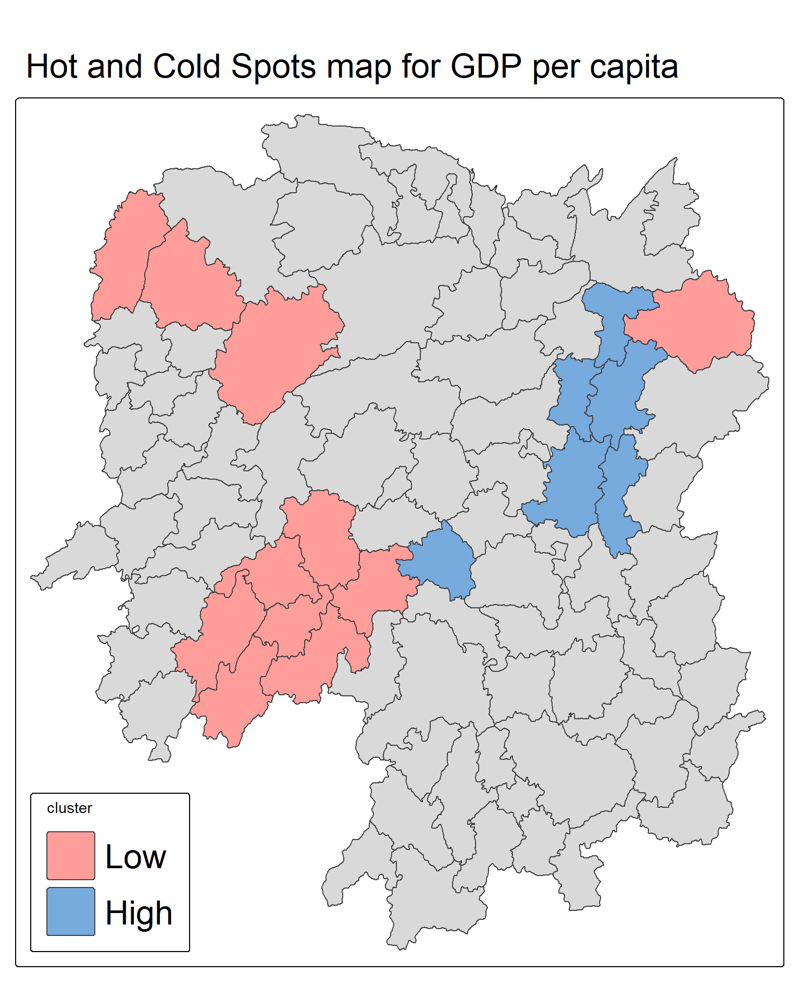

pacman::p_load(sf, tmap, tidyverse, sfdep)In-class_Ex05
Loading the packages
Importing Hunan shapefile and GDP table
Import Hunan shapefile
hunan <- st_read(dsn = "data/geospatial",
layer = "Hunan")Reading layer `Hunan' from data source
`C:\hungthq\ISSS626-GAA\In-class_Ex\In-class_Ex05\data\geospatial'
using driver `ESRI Shapefile'
Simple feature collection with 88 features and 7 fields
Geometry type: POLYGON
Dimension: XY
Bounding box: xmin: 108.7831 ymin: 24.6342 xmax: 114.2544 ymax: 30.12812
Geodetic CRS: WGS 84Import Hunan GDP file:
hunan2012 <- read_csv("data/aspatial/Hunan_2012.csv")Join Hunan & Hunan2012 data.frames and tidy the data table by retaining NAME_2, ID_3, NAME_3, County, GDPPC, GIO, Agri and Service
hunan_GDPPC_ <- left_join(hunan,hunan2012)hunan_GDPPC <- hunan_GDPPC_ %>%
select(1:3, 7, 15, 16, 33)Plotting choropleth map
tmap_mode("plot")
tm_shape(hunan_GDPPC) +
tm_polygons(fill = "GDPPC",
fill.scale = tm_scale_intervals(
style = "quantile",
values = "brewer.blues")) +
tm_title("Distribution of GDP per capita by county, Hunan Province", 2.0, "dark blue") +
tm_borders(fill_alpha = 0.5) +
tm_compass(type="8star", size = 2) +
tm_scalebar() +
tm_grid(fill_alpha =0.2) +
tm_layout(legend.position = c("left", "bottom"),
legend.text.size = 1.2)
Global mearuse of Spatial Association
Step1: deriving Queen’s contiguity weights: sfdep methods
wm_q <- hunan_GDPPC %>%
mutate (nb= st_contiguity(geometry),
wt= st_weights(nb, style = "W"),
.before=1)names(wm_q) [1] "nb" "wt" "NAME_2" "ID_3" "NAME_3" "County"
[7] "GDPPC" "GIO" "Disp_Inc" "geometry"Step2: computing Global Moran’s I
moranI <- global_moran(wm_q$GDPPC,
wm_q$nb,
wm_q$wt)
glimpse(moranI)List of 2
$ I: num 0.301
$ K: num 7.64Computing Local Moran’s I
lisa <- wm_q %>%
mutate(local_moran = local_moran(
GDPPC, nb, wt, nsim = 99),
.before =1) %>%
unnest(local_moran)Visualising local Moran’s I
tmap_mode("plot")
tm_shape(lisa) +
tm_polygons(fill = "ii",
fill.scale = tm_scale_intervals(
style = "fixed",
breaks = c(
-2, -1, 0, 1, 2, 3, 4, 5),
values = "brewer.rd_bu"),
fill.legend = tm_legend(
title = "Local Moran's I")) +
tm_borders(fill_alpha = 0.5) +
tm_view(set_zoom_limits = c(6,8)) +
tm_title("local Moran's I of GDPPC", 2.0) +
tm_layout(legend.text.size = 1.2,
legend.position = c('left', 'bottom'))
Visualising p-value of local Moran’s I
tmap_mode("plot")
tm_shape(lisa) +
tm_polygons(fill = "p_ii_sim") +
tm_borders(fill_alpha = 0.5) +
tm_title("p-value of local Moran's I", 2.0) +
tm_layout(legend.title.size = 1.5,
legend.position = c('left', 'bottom'))
Visualising local Moran’s I and p-value
Plotting both maps for better comparision
tmap_mode("plot")
local_gdppc <- tm_shape(lisa) +
tm_polygons(fill = "ii",
fill.scale = tm_scale_intervals(
style = "fixed",
breaks = c(
-2, -1, 0, 1, 2, 3, 4, 5),
values = "brewer.rd_bu"),
fill.legend = tm_legend(
title = "Local Moran's I")) +
tm_borders(fill_alpha = 0.5) +
tm_view(set_zoom_limits = c(6,8)) +
tm_title("local Moran's I of GDPPC", 2.0) +
tm_layout(legend.text.size = 1.2,
legend.position = c('left', 'bottom'))
local_pvalue <- tm_shape(lisa) +
tm_polygons(fill = "p_ii_sim") +
tm_borders(fill_alpha = 0.5) +
tm_title("p-value of local Moran's I", 2.0) +
tm_layout(legend.title.size = 1.2,
legend.position = c('left', 'bottom'))
tmap_arrange(local_gdppc, local_pvalue, nrow=1)
LISA map
LISA map is a categorical map showing outliers and clusters. There are two types of outliers namely: High-Low and Low-High outliers. Likewise, there are two type of clusters namely: High-High and Low-Low cluaters. In fact, LISA map is an interpreted map by combining local Moran’s I of geographical areas and their respective p-values.
lisa_sig <- lisa %>%
filter(p_ii_sim < 0.05)
tmap_mode("plot")
tm_shape(lisa) +
tm_polygons() +
tm_borders(fill_alpha=0.5) +
tm_shape(lisa_sig) +
tm_polygons(fill = "mean",
fill.legend = tm_legend(
text.size = 1.15,
width =6
)) +
tm_borders(fill_alpha = 0.4) +
tm_layout(legend.title.size = 1.25,
legend.position = c('left', 'bottom'))
Hot spot and cold spot area analysis (HCSA)
HCSA uses spatial weights to identify locations of statistically significant hot spots and cold spots in an spatially weighted attribute that are in proximity to one another based on a calculated distance.
The analysis groups features when similar high (hot) or low (cold) values are found in a cluster. The polygon features usually represent administration boundaries or a custom grid structure.
Computing local Gi* statistics
wm_idw <- hunan_GDPPC %>%
mutate(nb = include_self(
st_contiguity(geometry)),
wts = st_inverse_distance(nb,
geometry,
scale = 1,
alpha = 1),
.before = 1)Computing local Gi* statistics
HCSA <- wm_idw %>%
mutate(local_Gi = local_gstar_perm(
GDPPC, nb, wts, nsim = 99),
.before = 1) %>%
unnest(local_Gi)Visualising Gi*
tmap_mode("plot")
tm_shape(HCSA) +
tm_fill("gi_star") +
tm_borders(fill_alpha = 0.5) +
tm_view(set.zoom.limits = c(6,8)) +
tm_title(
"local G*i for GDP per capita", 2.0) +
tm_layout(legend.position = c('left', 'bottom'))
Visualising p-value of local G*i
tmap_mode("plot")
tm_shape(HCSA) +
tm_polygons(
fill = "p_sim",
fill.scale = tm_scale_intervals(
breaks = c(0, 0.001, 0.01, 0.05, 1.0),
labels = c("p < 0.001", "p < 0.01", "p < 0.05", "Not Significant"),
values = c("#de2d26", "#fc9272", "#fee0d2", "#e0e0e0")),
fill.legend = tm_legend(
title = "p-values")
) +
tm_title("p-values of G*i for GDP per capita") +
tm_borders(fill_alpha = 0.5) +
tm_layout(legend.position = c('left', 'bottom'),
legend.text.size = 1.2)
Visualising local HCSA
tmap_mode("plot")
localGstari <- tm_shape(HCSA) +
tm_fill("gi_star") +
tm_borders(fill_alpha = 0.5) +
tm_view(set.zoom.limits = c(6,8)) +
tm_title(
"local G*i for GDP per capita", 2.0) +
tm_layout(legend.position = c('left', 'bottom'))
pvalueGstari <- tm_shape(HCSA) +
tm_polygons(
fill = "p_sim",
fill.scale = tm_scale_intervals(
breaks = c(0, 0.001, 0.01, 0.05, 1.0),
labels = c("p < 0.001", "p < 0.01", "p < 0.05", "Not Significant"),
values = c("#de2d26", "#fc9272", "#fee0d2", "#e0e0e0")),
fill.legend = tm_legend(
title = "p-values")
) +
tm_title("p-values of G*i for GDP per capita") +
tm_borders(fill_alpha = 0.5) +
tm_layout(legend.position = c('left', 'bottom'),
legend.text.size = 1.2)
tmap_arrange(localGstari,pvalueGstari )
Visualising hot spot and cold spot areas
HCSA_sig <- HCSA %>%
filter(p_sim < 0.05)
tmap_mode("plot")
tm_shape(HCSA) +
tm_polygons() +
tm_borders(fill_alpha = 0.5) +
tm_shape(HCSA_sig) +
tm_polygons(fill = "cluster") +
tm_borders(fill_alpha = 0.4) +
tm_title("Hot and Cold Spots map for GDP per capita", 2.0) +
tm_layout(legend.position = c('left', 'bottom'),
legend.text.size = 2)